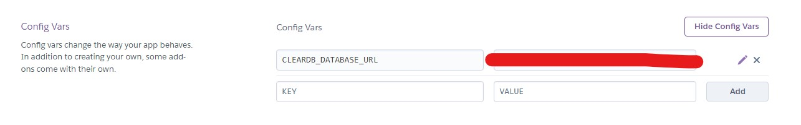
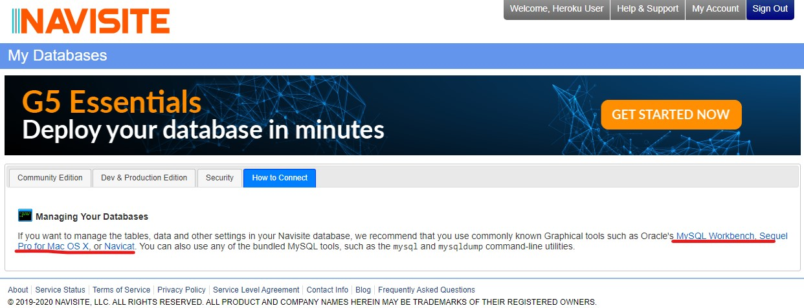
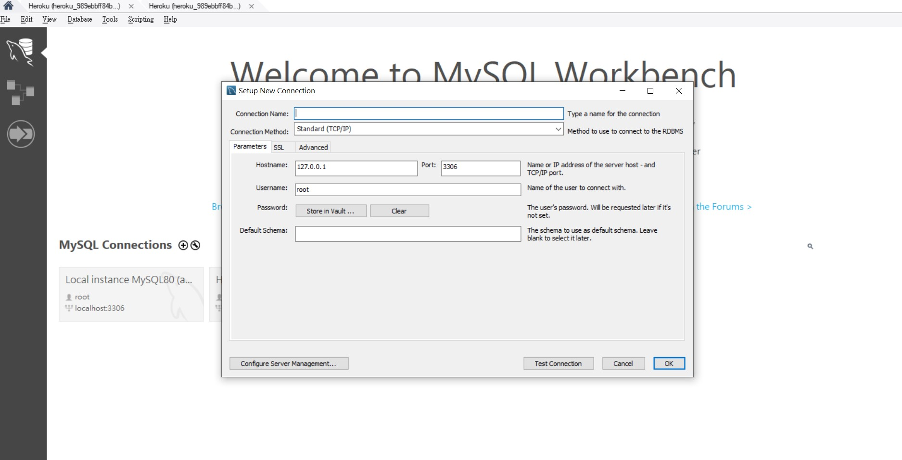

一樣做個筆記。
簡述
在 Heroku 的部署流程 裡已經教過怎麼部署，但裡面的例子只適用於「靜態網站」。如果想部署「動態網站」的話只看這篇是不夠的，所以才會寫這篇來補充。
首先要知道一個觀念，Heroku 屬於 PaaS（不知道 Paas 是什麼可以看這篇 理解那些五花八門的專有名詞：IaaS、PaaS 和 SaaS），所以你沒辦法直接像在用 AWS 一樣去裝個 MySQL 或 Apache 來跑之類的，它只是個「平台」，而平台能做的事情有限。
所以呢，要在 Heroku 上跑一些額外功能的話，得透過它提供的 Add-ons 才可以。
這邊我們想要用資料庫的功能，所以會用一個叫做 cleardb 的插件來當做範例。
詳細的介紹可以參考官方文件，這邊只會簡單帶一下流程。
安裝
記得是在你的 Heroku app 專案底下安裝。
附註：這邊裝的是 ignite 免費版，只能存 5MB
1 | heroku addons:create cleardb:ignite |
順道一提，如果你的帳號沒做驗證的話可能會跳出一段訊息要你設定信用卡。因為我懶跑的驗證流程所以就直接填了，但不用擔心，這個不會收費，純粹只是做個驗證而已。
設定 Sequelize 連線到資料庫的設定
（這邊是用 Sequelize 這套 ORM 來管理資料庫，所以就以 Sequelize 為主）
前面安裝好後，到你的 Heroku 裡面應該就能看到環境變數裡面多了資料庫的東西：

格式大概是長這樣：mysql://<username>:<password>@<host>/<db_name>?reconnect=true
透過環境變數是因為我們不想要把這些敏感資訊加到 git 裡面，所以才會透過這種方式。
接著是 Sequelize 的部分，首先來看一下 /models/index.js 的檔案內容：
1 | 'use strict'; |
總之呢，節錄這段是想講兩個重點：
- 我們想用 production 的 config
- 我們想透過
use_env_variable來設定連線到資料庫的值
所以接著到 config.json 來做一些調整：
1 | // config.json |
到目前為止，連線的部分就完成了。
接下來直接部署的話還是沒辦法跑的，因為我們用 Sequelize 建立資料庫時要得執行 npx sequelize db:migrate，這一步才算真的建立 table，所以得再加一段 script 才行：
1 | // package.json |
到這一步就真的完成了，可以 push 到 Heroku 上看看囉！
如果還是不行的話就老樣子，執行 heroku logs 來 debug 囉。
成功是成功了，但我要怎麼看資料庫裡的資料？
首先官方有告訴你這一段：

簡單來說就是建議你用管理資料庫的 GUI 軟體來看。我家是 Windows 所以就用 MySQL Workbench, 來做。
接下來的步驟也很簡單，就是透過前面 cleardb 提供給你的環境變數值來設定連線就 OK 了：

這邊要填的值：
- Connection Name：只是名稱而已，看你想填什麼
- HostName：主機名稱
- Username：使用者名稱
- Password：密碼
- Default Schema：DB 名稱
如果前面忘記格式的話再幫你複習一次，格式是長這樣：
mysql://<username>:<password>@<host>/<db_name>?reconnect=true
把對應的值填進去就好了，成功的話就能看到資料庫中的內容了。